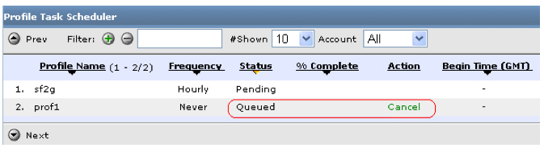
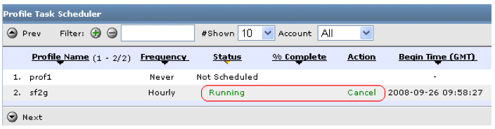
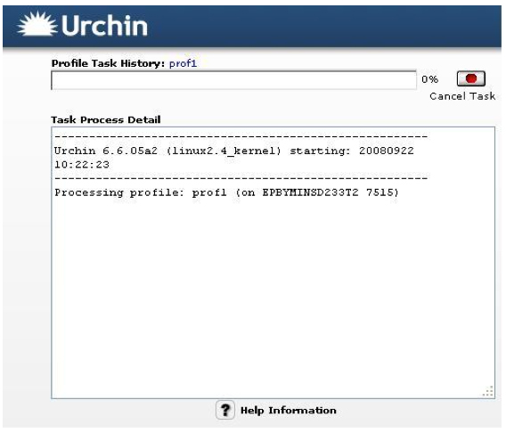

Process Manager
Beginning with Urchin 6.6, there is an option to cancel tasks that are in progress. This may be desirable in cases where Urchin has been directed to process excessively large log files (or an entire directory by mistake), or for some reason the process has become "stuck."
Profile processing can be interrupted via the Urchin admin interface or the included command-line utility, which is simply called "urchin."
You can cancel profile processing using the “Cancel ” link in Scheduler -> Profile Task Scheduler. This link is available when a profile is queued or running.
If the profile is queued, Cancel removes it from the queue. No changes will be performed in database.

If profile processing has already begun (with u6db “Running” status), Cancel stops the processing and all previous data is restored from the database backups. However, if no backups exist, profile processing can't be stopped during the Running stage. Note: If the previous state of the profile database was empty, then Urchin can cancel the job and revert back to the empty state, if no backups exist.

Note: If the “Create Backups” option is turned off, the Cancel link in the Running status will be disabled. To enable the Cancel link, you must set the “Create Backups” option to ON.

It is also possible to cancel profile processing from the “Profile Task History” window:
1. If/once profile processing has begun, go to Scheduler -> Profile Task Scheduler or to Scheduler -> Profile Task History.
2. Click the Running link.
3. In the window that appears, click the “Cancel Task” button.

Note: If the “Create Backups” option is turned off, the Cancel link in the Running status will be disabled.
Another way to cancel profile processing is by using the “urchin” utility in the <Urchin_home>/bin folder.
To cancel profile processing, run “urchin” with the following parameters:
urchin -c –P <profile_id>
or
urchin –c –p <profile_name>
Note: If you cancel a profile with remote log sources, all log sources will be removed from the local folder to which they were downloaded.